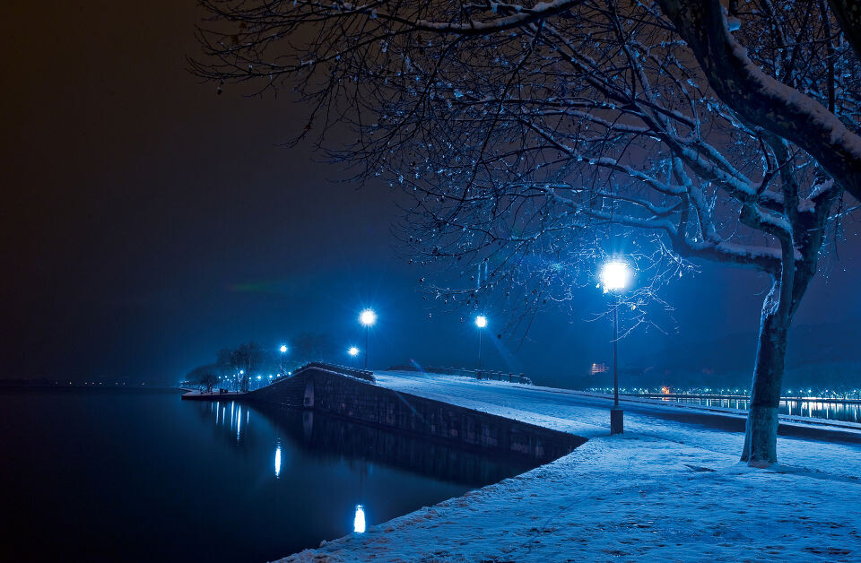
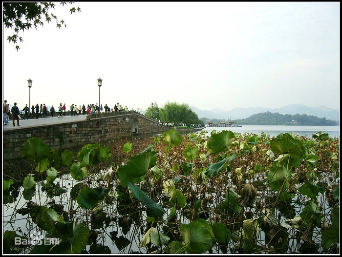
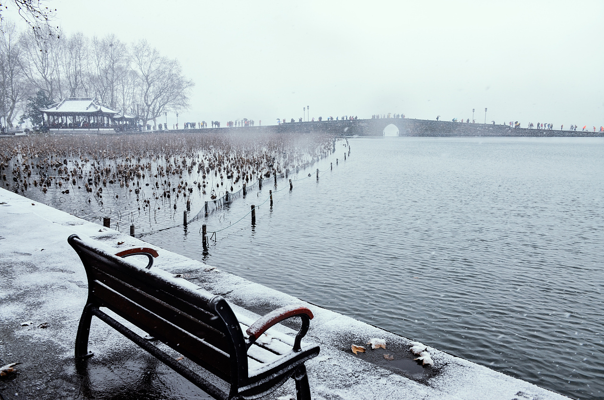
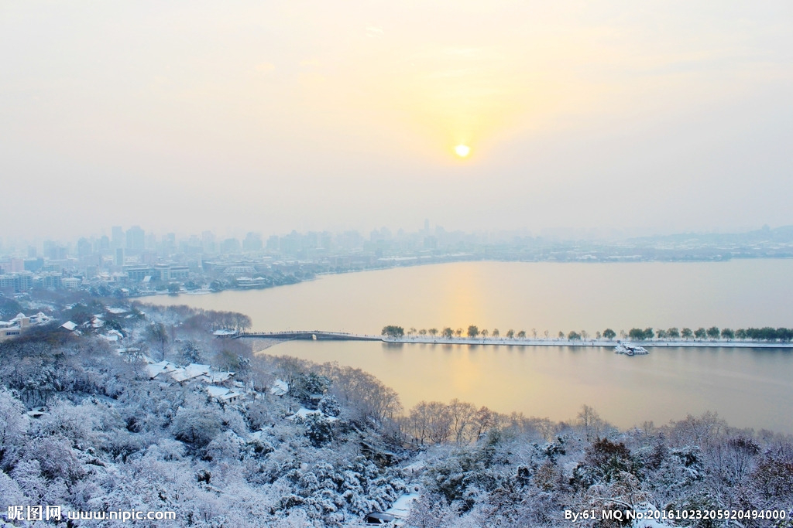

每当瑞雪初霁，站在宝石山上向南眺望，西湖银装素裹，白堤横亘雪柳霜桃。 断桥的石桥拱面无遮无拦，在阳光下冰雪消融，露出了斑驳的桥栏，而桥的两端还在皑皑白雪的覆盖下。 依稀可辨的石桥身似隐似现，而涵洞中的白雪奕奕生光，桥面灰褐形成反差，远望去似断非断，故称断桥。 伫立桥头，放眼四望，远山近水，尽收眼底，给人以生机勃勃的强烈而深刻的印象。
断桥位于杭州市西湖白堤的东端，背靠宝石山，面向杭州城，是外湖和北里湖的分水点。断桥势较高视野开阔，是冬天观赏西湖雪景的最佳去处。
白堤全长1千米，东起断桥，经锦带桥而止于平湖秋月。白堤横亘湖上，把西湖划分为外湖和里湖，并将孤山和北山连接在一起。 白堤在唐代原名白沙堤，宋代又叫孤山路。明代堤上广植桃柳，又称十锦塘。堤上内层是垂柳，外层是碧桃。最早记载“断桥残雪”的是唐朝的张祜，他的《题杭州孤山寺》云：
楼台耸碧岑，一径入湖心。
不雨山长润，无云水自阴。
断桥荒藓涩，空院落花深。
犹忆西窗月，钟声在北林。
诗中的一句“断桥荒藓涩”，从中可知断桥原是一座苔藓斑驳的古老平板石桥。大雪初霁，原来苔藓斑驳的古石桥上，雪残未消，似有些残山剩水的荒涩感觉， 这也就潜埋下了断桥残雪这西湖上独特景观的伏笔。在白堤东端断桥。
清雍正《西湖志》卷三：
“出钱塘门，循湖而行，人白沙堤。第一桥曰断桥，界于前后湖之中。水光滟潋，桥影倒浸，如玉腰金背。凡探梅孤山，蜡屐过此，辄值春雪未消。 葛岭一带，楼台高下，如铺琼砌玉，晶莹朗彻，不啻玉山上行。昔人称诗思在灞桥雪中，此较更胜。”
清《湖山便览》卷二：
“断桥残雪亭在断桥北。宋陈清波有《断桥残雪图》。康熙三十八年，圣祖仁皇帝御书四字为西湖十景之一。四十一年有司勒石建亭于此。 1929年西湖博览会结束后，碑亭由桥左移至桥右。新中国成立初，桥旁“云水光中”水榭一度作为浙江图书馆图书流通站，供游人休息阅览。 御碑亭与水榭，多次整修。“文化大革命”期间，碑石、“云水光中”牌坊全毁。 1977年重新刻制“断桥残雪”碑石，安置在原碑亭内；重制“云水光中”匾额，悬挂于水榭门楣上。
明人汪珂玉《西子湖拾翠余谈》有一段评说西湖胜景的妙语：“西湖之胜，晴湖不如雨湖，雨湖不如月湖，月湖不如雪湖……能真正领山水之绝者， 尘世有几人哉！”地处江南的杭州，每年雪期短促，大雪天更是罕见。一旦银装素裹，便会营造出与常时，常景迥然不同的雪湖胜况。 每当雪后初晴，来至断桥上往西，往北眺望，孤山，葛岭一带楼台上下，如铺琼砌玉，晶莹朗澈，有一种冷艳之美。
明代画家李流芳《西湖卧游图题跋——断桥春望》称：“往时至湖上，从断桥一望，魂销欲死。还谓所知，湖之潋滟熹微，大约如晨光之着树， 明月之入庐。盖山水映发，他处即有澄波巨浸，不及也。”由此观之，断桥观瞻，可得湖山之神髓，岂独残雪！
宋代叫它宝佑桥。元代因桥头居住着一对以卖酒为生的段姓夫妇，又称为段家桥。
传说，很早以前，西湖白沙堤，从孤山蜿蜿蜒蜒到这里，只有一座无名小木桥，与湖岸紧紧相连。游人要到孤山去游玩，都要经过这座小木桥，日晒雨淋， 桥板经常要烂断，游人十分不便。桥旁有一间简陋的茅舍，住着—对姓段的夫妇。两人心地善良，手脚勤快，男的在湖里捕鱼为生，女的在门口摆个酒摊， 卖家酿寡酒。因酒味不佳，顾客很少上门，生意清淡。
一天，日落西山，夫妇俩刚要关门，来了一个衣衫褴褛的白发老人，说是远道而来身无分文，要求留宿—夜。段家夫妇见他年老可怜，热情地留他住下， 还烧了一条刚从西湖里捕来的鲤鱼，打上一碗家酿寡酒，款待老人。老人也不客气，一连饮了三大碗，便倒在床上，呼呼入睡。第二天早晨白发老人临别时，
说道：“谢谢你们好心款待，我这里有酒药三颗，可帮得你们酿出好酒。”说罢，取出三粒红红的酒药，告别而去。
段家夫妇将老人的三颗酒药放在酿酒缸里，酿出来的酒，颜色猩红，甜醇无比，香气袭人。从此，天天顾客盈门，段家猩红酒名扬杭城，生意一天比一天兴隆。后来段家夫妇拆了茅舍，盖起了酒楼。他们为了感谢白发老人，积蓄了一笔钱，准备好好答谢他。
 岁月流逝，一晃三年。这年冬天，西湖大雪，白发老人冒雪来到段家酒楼。夫妇俩一见恩人来到，喜出望外，款留老人长住他家。然而老人第二天却要告别。 临别之时，段家夫妇取出银两子送给老人。老人笑着推辞说：“谢谢你们夫妇—片好心，我这孤单老人，要这么多银钱何用？你们还是用在最要紧的地方吧”说罢， 便踏雪向小桥走去。段家夫妇站在门口相送，只见老人刚跨上小木桥，脚下一滑，桥板断啦，老人也跌进了湖里。夫妇俩急忙跑去相救，忽见白发老人立于湖面， 如履平地，微笑着向他们挥挥手，飘然而去。段家夫妇这才知道，白发老人不是凡人。想起老人临别说的话，使用那笔银钱在原来的小木桥处，造起了一座高高的青石拱桥，还在桥头建了一座亭子。从此， 游西湖的人，再不怕路滑桥塌啦。乡亲父老怀念段家夫妇行善造桥的好事，便把这桥称为段家桥。
现存的断桥，是1921年重建的拱形独孔环洞石桥，长8.8米，宽8.6米，单孔净跨6.1米，年前曾经大修，但古朴淡雅的风貌基本未变。桥东堍有康熙御题景碑亭，亭侧建水榭， 题额“云水光中”，青瓦朱栏，飞檐翘角，与桥，亭构成西湖东北隅一幅古典风格的画图。
关于断桥的几种说法：
1、明代《西湖游览志》戏说，断桥是由于孤山延伸来的白堤，到此逢桥而断才得名的，但这很是牵强。
2、人们一路从平湖秋月走来，白堤至此而断，故称断桥，如此却少了意境。
3、冬日雪霁，伫立断桥举目四望，残雪似银，冻湖如墨，黑白分隔，格外动人心魄，故而，称其为“断桥残雪”，由来只是字面解释。
4、明末的张岱却别立一说，他在《西湖梦寻》是写道：白堤上沿堤植桃柳，“树皆合抱，行其下者，枝叶扶苏，漏下月光，碎如残雪”。意向言“断桥残雪”， 说的是月影，有闭门造车之嫌疑。
5、断桥位于外湖和北里湖间，视野开阔，是冬天观赏西湖雪景最佳处所。每当瑞雪初晴，站在宝石山上眺望，桥的阳面已冰消雪化，湖波荡漾，所以向南面望去“雪残桥断”， 而桥的阴面却还是白雪皑皑，故从北面望去，“断桥不断”，这个有和实际不相符合，只是猜想。
断桥是西湖中最出名的一座桥。杭州西湖，有四大爱情桥“西泠桥”、“长桥”、“断桥”、“跨虹桥”，盛名经久不衰。泠桥、长桥、断桥是古代的爱情桥， 跨虹桥是现代爱情桥，是众多情侣约会相游的地方，而最符盛名的却是断桥，它的名字与中国民间故事《白蛇传》中缠绵悲怆的爱情故事联系在一起。 在断桥上，流传的那许仙和白娘子动人的爱情故事，让断桥成为西湖上众多桥中最著名的桥。传说，白娘子原本是山野中修炼的一条小白蛇，有一天， 小白蛇被一个捕蛇老人抓住了，差一点遭遇杀身之祸，幸亏被一个小牧童所救。经过一千七百年的修炼，白娘子终于化做人形，经观音大士指点，来到 杭州西湖寻找前世救命恩人小牧童。
清明佳节，烟雨蒙蒙，观音菩萨说过“有缘千里来相会，须往西湖高处寻”。而在西湖的断桥的桥面上，由伞传情，白娘子终于找到了前世的救命恩人许仙， 以身相许，结为夫妻。在经历水漫金山之后，又是在断桥邂逅重逢，再续前缘。
明末《警世通言》记载，宋代时，有一千年修炼的蛇妖化作人形叫白素贞，与青蛇精小青，在杭州西湖的断桥上遇书生许仙，白蛇逐生欲念，欲与书生缠绵， 乃嫁与他。后经历诸多是非，许仙乃知白素贞、小青俱是异类，并受白蛇威胁，惊恐难安，便求法海禅师救度。于是白蛇被收入钵内，镇压于雷峰塔下。 许仙看破红尘情愿出家，礼拜禅师为师，就雷峰塔披剃为僧。修行数年，一夕坐化去了。众僧买龛烧化，造一座骨塔，千年不朽，临去世时，亦有诗八句，留以警世， 诗曰：
祖师度我出红尘，铁树开花始见春。
化化轮回重化化，生生转变再生生。
欲知有色还无色，须识无形却有形。
色即是空空即色，空空色色要分明。
越剧《白蛇传》中白娘子唱道：“西湖山水还依旧……看到断桥桥未断，我寸肠断，一片深情付东流”。这发至肺腑的话语，实实的催人泪下。抚摸桥栏，追古思今， 每个性情中人都会生出无限的感慨，每个到此的天涯游客人都会产生无尽的追思。